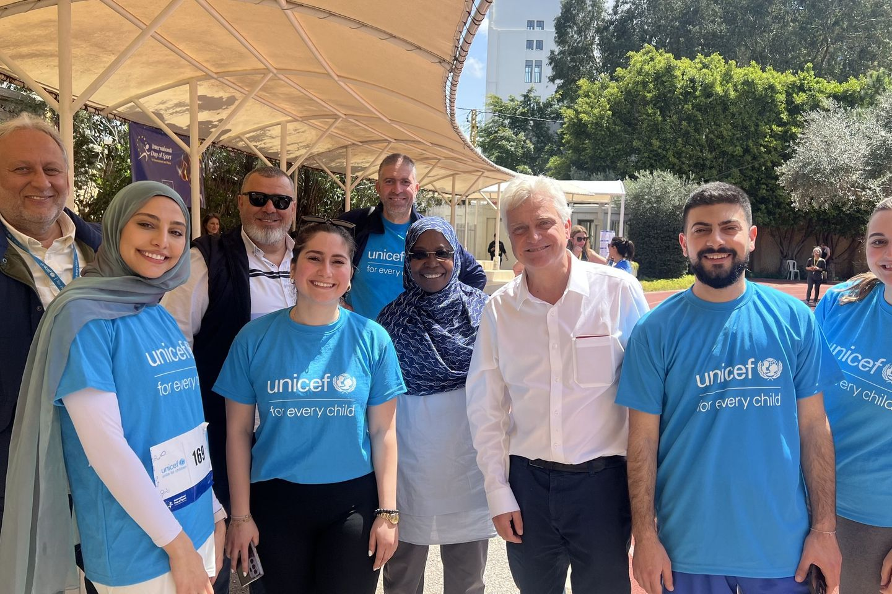

الصحة العامة والعمل الإنساني
من الأدلة
إلى التنفيذ
أكثر من 8 سنوات بين وكالات الأمم المتحدة والجهات الحكومية والأكاديمية والبيئات الإنسانية — أحوّل البيانات إلى رؤى، والرؤى إلى أفعال.
أجمع بين خبرتي في الصحة العامة والتغذية والبيانات والأبحاث والبرامج لمساعدة المؤسسات على تصميم البرامج الصحية وتنفيذها ورصدها وتحسينها.
بفضل أكثر من 8 سنوات من الخبرة في وكالات الأمم المتحدة والجهات الحكومية والأكاديمية والبيئات الإنسانية، عملت على مشاريع تشمل الصحة والتغذية، والرعاية الصحية الأولية، والرصد والتقييم، وإدارة المعلومات، والأبحاث، وصحة المجتمع، والاستجابة للطوارئ.
يقع عملي عند نقطة التقاء الأدلة والتنفيذ — تحويل البيانات إلى رؤى، والرؤى إلى أفعال، وتحديات الصحة العامة المعقّدة إلى حلول عملية.
- ماجستير في الصحة العامة
- علم الأوبئة والإحصاء الحيوي، الجامعة الأميركية في بيروت · 2019
- المؤسسات
- اليونيسف · برنامج الأغذية العالمي · الجامعة الأميركية في بيروت · وزارة الصحة العامة
- أبحاث محكّمة
- BMJ Open · Public Health
- مقرّي
- بيروت، لبنان — متاحة للعمل عن بُعد
مجالات الخبرة
خمسة مجالات عمل تلتقي باستمرار في الميدان.
تصميم البرامج، والرعاية الصحية الأولية، وتعزيز الأنظمة الصحية، ومسارات الإحالة، وصحة المجتمع، وتحسين الخدمات الصحية.
أطر الرصد، والمؤشرات، والأطر المنطقية، وتقييم البرامج، وجودة البيانات، ورصد الأداء، وإعداد التقارير.
إدارة البيانات، ولوحات المعلومات، وتصوير البيانات، وأنظمة المعلومات، وجودة البيانات، والتحليل، واتخاذ القرار المبني على الأدلة.
تصميم الأبحاث، ومراجعات الأدبيات، والأبحاث النوعية والكمية، وتحليل البيانات، والمراجعات المنهجية، وتجميع الأدلة.
تقييم الاحتياجات في حالات الطوارئ، والاستجابة الصحية والغذائية، ورصد البرامج، والمساءلة، وإدارة بيانات المستفيدين، وأنظمة المعلومات في حالات الطوارئ.
تطوير برامج التدريب والمواد التعليمية وورش العمل والأدوات العملية للعاملين في الصحة العامة، والعاملين الصحيين المجتمعيين، والشركاء، وفرق البرامج.
كيف وصلت إلى هنا
تدرّبت أولاً كأخصائية تغذية. وما كنت أصطدم به باستمرار هو حدود الغرفة: يمكنك أن تغيّر ما يأكله شخص واحد، لكن لا يمكنك أن تغيّر ما يأكله بلد بأكمله استشارةً تلو الأخرى. لذلك التحقت بالجامعة الأميركية في بيروت لنيل الماجستير في الصحة العامة، بتخصّص علم الأوبئة والإحصاء الحيوي.
في عام 2018 انضممت إلى اليونيسف كواحدة من أوائل متطوعي الأمم المتحدة الشباب في لبنان — واحدة من ستة اختيروا على المستوى الوطني — ضمن برنامج تجريبي عالمي يركّز على بقاء الأطفال، وكنت لا أزال أُكمل دراستي.
في عام 2019 انضممت إلى برنامج الأغذية العالمي في لبنان بصفة مساعدة في الرصد والتقييم، وأمضيت سنتين ونصفاً أتنقّل بين أدوار مختلفة بينما كان البلد يمرّ بأزمات متراكمة.
ابتداءً من عام 2022 عملت مستشارةً مع اليونيسف في إدارة المعلومات — حيث تلتقي الصحة والبيانات والصحة العامة. وابتداءً من عام 2023 أعمل مستشارةً مع وزارة الصحة العامة اللبنانية عبر الجامعة الأميركية في بيروت، من داخل النظام الصحي الوطني لا من جانبه.
والخيط الذي يجمع كل ما أفعله واحد: أن أعرف ما هو صحيح فعلاً، ثم أجعله قابلاً للاستعمال لمن عليه أن يتصرّف صباح الإثنين.
الأبحاث والمنشورات
الاهتمامات البحثية
8 سنوات في العمل الإنساني
للمؤسسات
لديكم برنامج يحتاج إلى دعم؟
استشارات قصيرة الأمد، وتقييمات، ودعم بحثي، وأنظمة معلومات، وتصميم تدريب — أو حديث حول ما إذا كنت الشخص المناسب لذلك. أخبروني بما تعملون عليه.